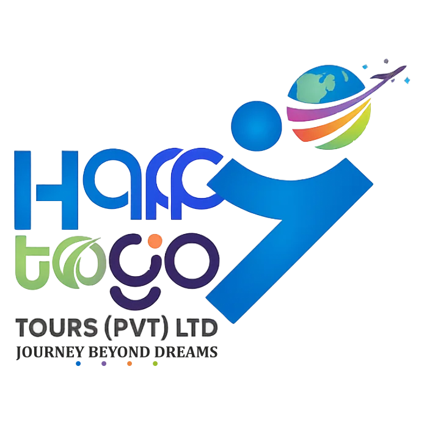

Design services / Logo Recreation & Vector Tracing in Madurai
Logo Recreation & Vector Tracing in Madurai
Have a logo only as a small image, scan or screenshot? Sai Graphic Designs in Madurai offers logo recreation and vector tracing for businesses that need usable artwork for print and digital applications.

Recreation or a new logo?
Recreation follows an existing design: the aim is to rebuild its shapes, lettering and colours as closely as the reference allows. A redesign changes the identity. Tell us which result you need before requesting a quote; unclear details may need your approval rather than a guess.
What to send
Send the clearest original image or scan, any previous artwork, the business name and known fonts or colours. Explain where the logo will be used, such as a business card, label, signboard or website, and list the required export formats. Please provide artwork you are authorised to use.
Review the details before delivery
We agree the scope and file formats, recreate the artwork, and send a proof for review. Check lettering, spacing, symbols and colours against your reference. Revisions, turnaround and deliverables are confirmed with your quote. A complex illustration needs a different scope from a simple wordmark.
Frequently asked questions
Which vector and source files can I request?
Discuss CDR or AI editable artwork and vector PDF or SVG exports before starting. Availability depends on the agreed workflow. If you use an older CorelDRAW version, tell us the version so compatibility can be checked.
Can you recover details from a blurry logo?
A blurry reference can hide lettering and small shapes. Send any better reference you have. Details that cannot be established reliably need your confirmation; recreating a logo does not recover missing original information.
What does logo recreation cost?
The quote depends on shape complexity, lettering, reference quality and required versions or formats. Send your reference and deadline for a project-specific quote.
Based in Madurai, Tamil Nadu. Online design briefs are welcome from clients in India and abroad. Contact us to confirm your requirements.
Contact Sai Graphic Designs · View our portfolio
Related services and guides
- Business Card & Visiting Card Design in Madurai
- Bifold & Trifold Brochure Design in Madurai
- Check artwork before printing
Published by Sai Graphic Designs · Updated 20 October 2026